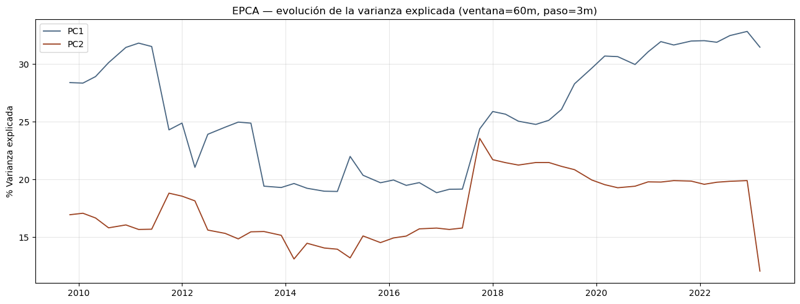
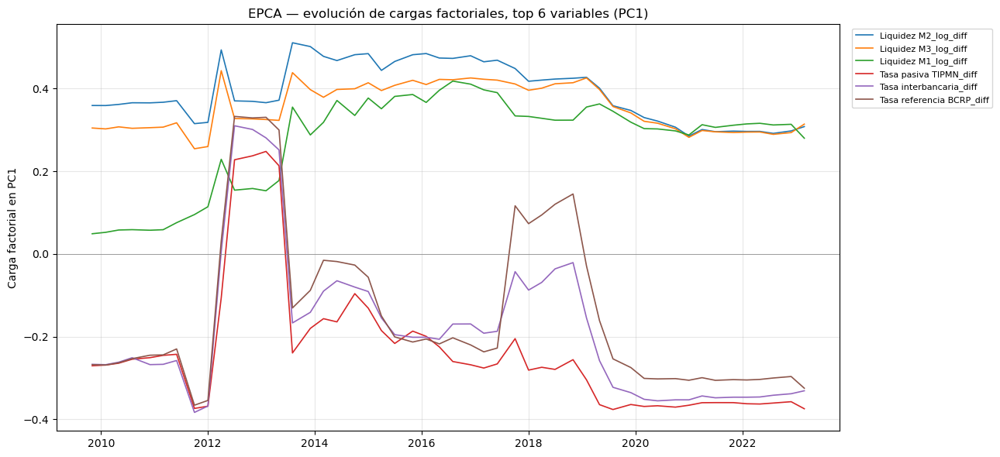
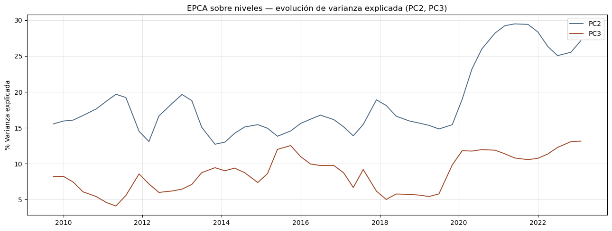
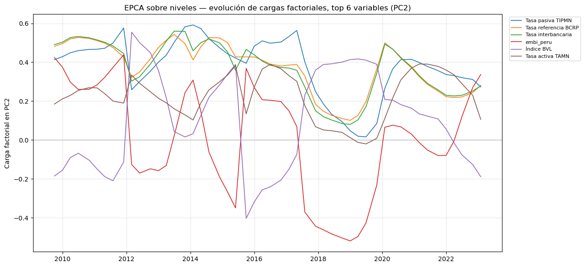

Tesis: Medición del ciclo financiero en Perú mediante técnicas de reducción dimensional y machine learning
Decisión de diseño (enfoque híbrido, justificada en notebooks previos): - PCA estático (05_pca.ipynb): frecuencia trimestral, incluye índice de precios de inmuebles. - EPCA (este notebook): frecuencia mensual, sin inmuebles (serie trimestral en origen, no se interpola). Motivo: la restricción n > p hace inviables ventanas móviles cortas en trimestral (ver 06a_seleccion_ventana_epca_v2.ipynb vs. 06b_..._mensual.ipynb).
Parámetros elegidos, con evidencia empírica (no arbitrarios): - Ventana: 60 meses (5 años) — mejor balance estabilidad/sensibilidad observado en 06b, señal más limpia para el episodio mejor confirmado (taper tantrum 2013). - Paso: 3 meses. - Componente principal rastreado: PC1 para transformado (no contaminado por tendencia, corr. con tiempo = 0.089, ver 05_pca.ipynb); PC2 para niveles (PC1 contaminado, corr. = 0.994).
Limitaciones reconocidas (no ocultas): - La crisis financiera global (2008-2009) no pudo validarse visualmente por efecto de borde (pocas ventanas previas al inicio de la muestra). - La pandemia COVID-19 (2020) no mostró caída de estabilidad en ningún tamaño de ventana probado – se interpreta como hipótesis a discutir (shock simultáneo y generalizado que no altera la estructura relativa entre variables), no como fallo del método.
No modifica ningún archivo de data/processed/ – solo lee.
import osos.chdir('..') if os.path.basename(os.getcwd()) =='notebooks'elseNoneimport pandas as pdimport numpy as npimport matplotlib.pyplot as pltfrom sklearn.preprocessing import StandardScalerfrom sklearn.decomposition import PCAdf_transf = pd.read_csv('data/processed/dataset_estandarizado_mensual.csv', index_col=0, parse_dates=True)df_niveles = pd.read_csv('data/processed/dataset_niveles_estandarizado_mensual.csv', index_col=0, parse_dates=True)VENTANA =60PASO =3print(f'Transformado: {df_transf.shape[0]} meses x {df_transf.shape[1]} variables')print(f'Niveles: {df_niveles.shape[0]} meses x {df_niveles.shape[1]} variables')print(f'Ventana: {VENTANA} meses, paso: {PASO} meses')
Transformado: 208 meses x 17 variables
Niveles: 209 meses x 19 variables
Ventana: 60 meses, paso: 3 meses
2. Función EPCA
Ajusta PCA en cada ventana móvil y devuelve, por ventana: fecha central, varianza explicada, y cargas factoriales completas – la secuencia de estructuras factoriales que define EPCA (ver sección 4.3 del marco conceptual).
3.1 Evolución de la varianza explicada por PC1 y PC2
Muestra si la capacidad descriptiva del PCA se mantiene estable en el tiempo, o si cambia (señal de reconfiguración estructural).
var_pc1 = [v[0] *100for v in varianzas_t]var_pc2 = [v[1] *100for v in varianzas_t]fig, ax = plt.subplots(figsize=(13, 5))ax.plot(fechas_t, var_pc1, label='PC1', color='#486581', linewidth=1.3)ax.plot(fechas_t, var_pc2, label='PC2', color='#9c4221', linewidth=1.3)ax.set_ylabel('% Varianza explicada')ax.set_title('EPCA — evolución de la varianza explicada (ventana=60m, paso=3m)')ax.legend()ax.grid(True, alpha=0.3)plt.tight_layout()os.makedirs('reports/figures', exist_ok=True)plt.savefig('reports/figures/06_epca_varianza_evolutiva.png', dpi=150, bbox_inches='tight')plt.show()

3.2 Evolución de las cargas factoriales de PC1
Para las variables con mayor carga promedio en PC1, se grafica cómo cambia su carga a lo largo de las ventanas – esto es lo que Camiz, Maulucci & Roig (2010) llaman “rotación” del componente: si una variable que dominaba PC1 pierde peso mientras otra lo gana, es evidencia directa de reconfiguración estructural (posible transición de régimen).
cargas_pc1 = np.array([c[0] for c in cargas_t]) # (n_ventanas, n_variables)df_cargas_pc1 = pd.DataFrame(cargas_pc1, index=fechas_t, columns=df_transf.columns)# Alinear signo respecto a la ventana anterior (signo de PCA es arbitrario)for i inrange(1, len(df_cargas_pc1)): corr = np.corrcoef(df_cargas_pc1.iloc[i], df_cargas_pc1.iloc[i-1])[0, 1]if corr <0: df_cargas_pc1.iloc[i] =-df_cargas_pc1.iloc[i]top_variables = df_cargas_pc1.abs().mean().sort_values(ascending=False).head(6).indexfig, ax = plt.subplots(figsize=(13, 6))for var in top_variables: ax.plot(df_cargas_pc1.index, df_cargas_pc1[var], label=var, linewidth=1.2)ax.axhline(0, color='gray', linewidth=0.5)ax.set_ylabel('Carga factorial en PC1')ax.set_title('EPCA — evolución de cargas factoriales, top 6 variables (PC1)')ax.legend(fontsize=8, loc='upper left', bbox_to_anchor=(1.01, 1))ax.grid(True, alpha=0.3)plt.tight_layout()plt.savefig('reports/figures/06_epca_cargas_evolutivas.png', dpi=150, bbox_inches='tight')plt.show()

3.3 Estabilidad y detección de transiciones
Mismo criterio ya validado en 06b: correlación entre cargas de PC1 de ventanas sucesivas. Se marcan como “transición candidata” los puntos por debajo de un umbral (media - 1 desviación estándar).
estabilidad = [ np.corrcoef(df_cargas_pc1.iloc[i], df_cargas_pc1.iloc[i-1])[0, 1]for i inrange(1, len(df_cargas_pc1))]fechas_estabilidad = df_cargas_pc1.index[1:]estab_arr = np.array(estabilidad)umbral = estab_arr.mean() - estab_arr.std()transiciones = [fechas_estabilidad[i] for i inrange(len(estab_arr)) if estab_arr[i] < umbral]fig, ax = plt.subplots(figsize=(13, 4.5))ax.plot(fechas_estabilidad, estabilidad, marker='o', markersize=3, color='#486581')ax.axhline(umbral, color='#c0392b', linestyle='--', linewidth=1, label=f'Umbral ({umbral:.2f})')for t in transiciones: ax.axvline(t, color='#c0392b', alpha=0.15)ax.set_ylabel('Estabilidad (correlación cargas)')ax.set_title('EPCA — estabilidad de PC1 y transiciones candidatas')ax.legend()ax.grid(True, alpha=0.3)plt.tight_layout()plt.savefig('reports/figures/06_epca_transiciones.png', dpi=150, bbox_inches='tight')plt.show()print(f'Transiciones candidatas detectadas: {len(transiciones)}')for t in transiciones:print(f' {t.strftime("%Y-%m")}')
4.1 Evolución de la varianza explicada por PC2 y PC3 (niveles)
Se usa PC2 en vez de PC1 como referencia principal (PC1 contaminado por tendencia), y PC3 como segunda referencia, para mantener el mismo tipo de gráfico de dos componentes que en la sección 3.1.
var_pc2_n = [v[1] *100for v in varianzas_n]var_pc3_n = [v[2] *100for v in varianzas_n]fig, ax = plt.subplots(figsize=(13, 5))ax.plot(fechas_n, var_pc2_n, label='PC2', color='#486581', linewidth=1.3)ax.plot(fechas_n, var_pc3_n, label='PC3', color='#9c4221', linewidth=1.3)ax.set_ylabel('% Varianza explicada')ax.set_title('EPCA sobre niveles — evolución de varianza explicada (PC2, PC3)')ax.legend()ax.grid(True, alpha=0.3)plt.tight_layout()plt.savefig('reports/figures/06_epca_varianza_evolutiva_niveles.png', dpi=150, bbox_inches='tight')plt.show()

4.2 Evolución de las cargas factoriales de PC2 (niveles)
Mismo procedimiento que la sección 3.2, aplicado a PC2 de niveles.
cargas_pc2_niveles = np.array([c[1] for c in cargas_n])df_cargas_pc2_niveles = pd.DataFrame(cargas_pc2_niveles, index=fechas_n, columns=df_niveles.columns)for i inrange(1, len(df_cargas_pc2_niveles)): corr = np.corrcoef(df_cargas_pc2_niveles.iloc[i], df_cargas_pc2_niveles.iloc[i-1])[0, 1]if corr <0: df_cargas_pc2_niveles.iloc[i] =-df_cargas_pc2_niveles.iloc[i]top_variables_niveles = df_cargas_pc2_niveles.abs().mean().sort_values(ascending=False).head(6).indexfig, ax = plt.subplots(figsize=(13, 6))for var in top_variables_niveles: ax.plot(df_cargas_pc2_niveles.index, df_cargas_pc2_niveles[var], label=var, linewidth=1.2)ax.axhline(0, color='gray', linewidth=0.5)ax.set_ylabel('Carga factorial en PC2')ax.set_title('EPCA sobre niveles — evolución de cargas factoriales, top 6 variables (PC2)')ax.legend(fontsize=8, loc='upper left', bbox_to_anchor=(1.01, 1))ax.grid(True, alpha=0.3)plt.tight_layout()plt.savefig('reports/figures/06_epca_cargas_evolutivas_niveles.png', dpi=150, bbox_inches='tight')plt.show()

4.3 Estabilidad y detección de transiciones (niveles, PC2)
estabilidad_n = [ np.corrcoef(df_cargas_pc2_niveles.iloc[i], df_cargas_pc2_niveles.iloc[i-1])[0, 1]for i inrange(1, len(df_cargas_pc2_niveles))]fechas_estabilidad_n = df_cargas_pc2_niveles.index[1:]estab_arr_n = np.array(estabilidad_n)umbral_n = estab_arr_n.mean() - estab_arr_n.std()transiciones_n = [fechas_estabilidad_n[i] for i inrange(len(estab_arr_n)) if estab_arr_n[i] < umbral_n]fig, ax = plt.subplots(figsize=(13, 4.5))ax.plot(fechas_estabilidad_n, estabilidad_n, marker='o', markersize=3, color='#486581')ax.axhline(umbral_n, color='#c0392b', linestyle='--', linewidth=1, label=f'Umbral ({umbral_n:.2f})')for t in transiciones_n: ax.axvline(t, color='#c0392b', alpha=0.15)ax.set_ylabel('Estabilidad (correlación cargas, PC2)')ax.set_title('EPCA sobre niveles — estabilidad de PC2 y transiciones candidatas')ax.legend()ax.grid(True, alpha=0.3)plt.tight_layout()plt.savefig('reports/figures/06_epca_transiciones_niveles.png', dpi=150, bbox_inches='tight')plt.show()print(f'Transiciones candidatas detectadas (niveles, PC2): {len(transiciones_n)}')for t in transiciones_n:print(f' {t.strftime("%Y-%m")}')
5. Comparación directa: transformado (PC1) vs. niveles (PC2)
¿Ambas variantes detectan transiciones en fechas parecidas, o divergen? Coincidencias entre ambas son evidencia más fuerte de una transición real que si solo una variante la detecta.
print('--- Transiciones candidatas: transformado (PC1) ---')for t in transiciones:print(f' {t.strftime("%Y-%m")}')print()print('--- Transiciones candidatas: niveles (PC2) ---')for t in transiciones_n:print(f' {t.strftime("%Y-%m")}')# Coincidencias dentro de una ventana de +/- 6 mesescoincidencias = []for t1 in transiciones:for t2 in transiciones_n:ifabs((t1 - t2).days) <=180: coincidencias.append((t1, t2))print()print(f'Coincidencias (dentro de +/- 6 meses): {len(coincidencias)}')for t1, t2 in coincidencias:print(f' Transformado {t1.strftime("%Y-%m")} <-> Niveles {t2.strftime("%Y-%m")}')